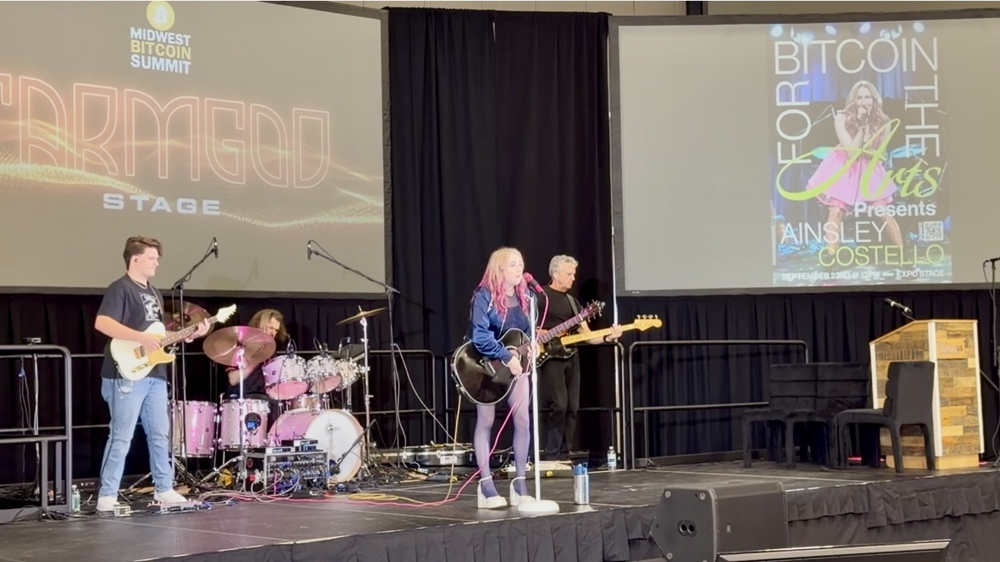
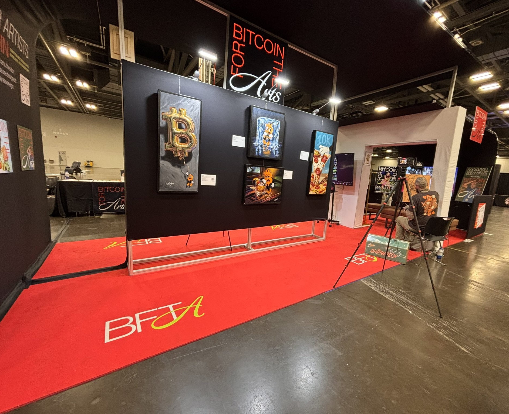
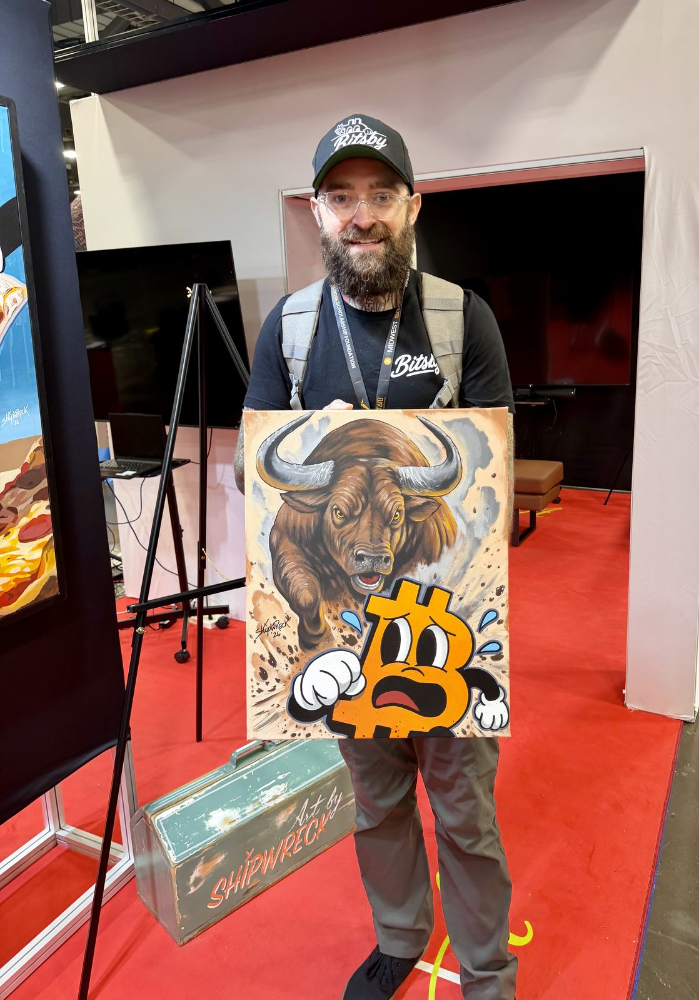
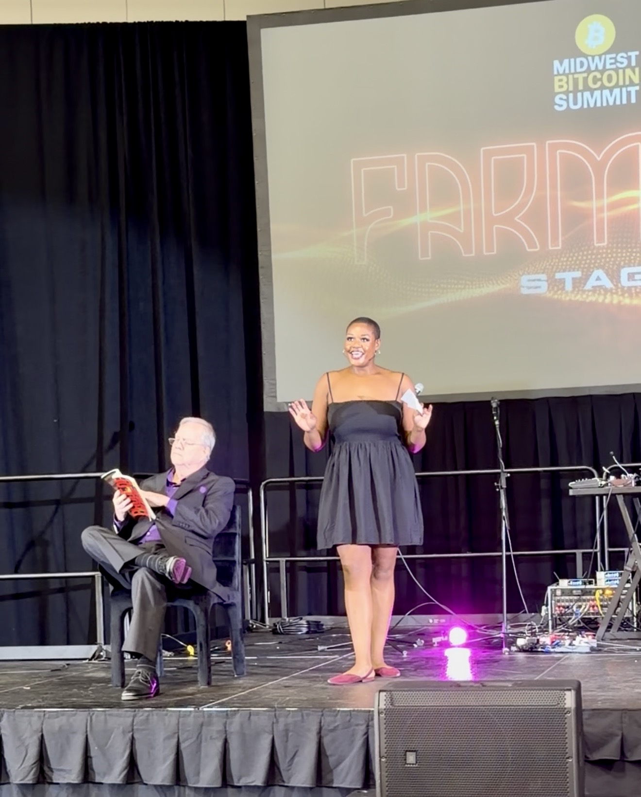

The old money is failing artists. A main-stage talk and panel on what holders can do about it, an artist's own story told with a live Lightning payment, and a featured original work. Presented by Bitcoin For The Arts, a 501(c)(3), to some of the most committed bitcoin holders in the country.

Art has always depended on patrons. Today the patrons, the box office, and the public money are all losing ground to the same force: money that buys less every year. Costs rise faster than ticket prices, donations, or grants can follow, and artists are the first to be cut.
The Metropolitan Museum of Art, the largest art museum in the United States, ran an operating deficit for the second year in a row as staff and program costs rose. On Broadway, Cats: The Jellicle Ball won three Tony Awards, grossed about $1 million a week, and still closed after five months. Andrew Lloyd Webber said Broadway is in "dire danger." The cost of mounting a musical has roughly doubled in a decade.
If institutions with billions in assets can't keep up, independent artists have no chance on fiat terms. A fee agreed in January buys less by December. Savings built in a good season lose value in a quiet one. Payments arrive late, and middlemen take a cut each time money changes hands.
Bitcoin holders already understand sound money. Artists need it most and have been shown it least. Bitcoin For The Arts pays artists in bitcoin, money that can't be printed, sent over Lightning in seconds with no middleman. A gift from this room goes straight into that bridge: grants to working artists, education in sound money, and live programs that bring culture to bitcoin and bitcoin to culture.
In September 2026 Bitcoin For The Arts opened Bitcoin Arts Park at the Midwest Bitcoin Summit in Columbus: live music, theatre, painting, film, and a silent auction for artists. Every artist on the bill was paid.



Sources: The Metropolitan Museum of Art, Annual Report for the Year 2024 to 2025. The New York Times, "The Broadway Musical Is in Trouble," September 22, 2025. The Guardian, July 14, 2026. ABC7 New York, "Is Broadway broken?" 2026. PBS NewsHour, on National Endowment for the Arts grant terminations, May 2025.
The program closes with three asks: collect or commission from working artists, pay artists directly in sats, and give to Bitcoin For The Arts.
BitcoinDay is an intimate, high-signal gathering of bitcoin holders with the means and the interest to commission, collect, and give.
The gift is made to Bitcoin For The Arts, Inc. Every dollar we raise follows a published rule: 55 percent to artist grants, 30 percent to programs, 10 percent to operations, and 5 percent to the HODL Vault, our long-term bitcoin reserve. At this level the production is most of the program, so programs carry a larger share of this gift. Operations and the HODL Vault stay at 10 and 5 percent.
| Line | What it pays for | Amount |
|---|---|---|
| Artist grants · 35% | $1,750 | |
| Featured artist grant | Pays the featured artist for showing their work and covers shipping it to Naples and back. | $500 |
| Artist Grants Pool | Funds 2027 Bitcoin For The Arts grants to working artists, paid in bitcoin. | $1,250 |
| Programs · 50% | $2,500 | |
| Production by Phantom Power Music | The Friday performance, venue permitting, production of the talk, the panel presentation, and the live Lightning demo, plus the team's costs to be in Naples. | $2,500 |
| Operations · 10% | $500 | |
| Coordination and insurance | Artist agreement, scheduling with BitcoinDay, event insurance, donor receipts, and a written report to the sponsor afterward. | $500 |
| HODL Vault · 5% | $250 | |
| Long-term reserve | Held in bitcoin to sustain the mission. | $250 |
| Total | Payable to Bitcoin For The Arts, Inc. | $5,000 |
Phantom Power Music produces the program: the Friday performance with Ainsley Costello, venue permitting, production of her talk and Lightning demo, and the team's costs to be in Naples.
Paid by Bitcoin For The Arts, Inc. from the programs share of this gift.
The works are auctioned online through CLCT, our auction partner. When a work sells, two-thirds goes to the artist and one-third to CLCT, which donates a portion of its share to Bitcoin For The Arts.
Sales are in addition to this $5,000. Not in this budget: Dion Wilson's travel and lodging, which he covers himself, and the room, sound, and stage, provided by BitcoinDay.
Name and logo on the panel, the talk, and the table, on signs, screens, and the printed program.
Named from the main stage during the panel and at the giving moment.
One year at the top level of our Sovereign Circle, including the right to name a 2027 Bitcoin For The Arts grant cycle.
Cleared for the sponsor's reuse with credit. Recognition on our donor page, in the newsletter, and in pre-event promotion.
The gift is a charitable contribution to a 501(c)(3). The receipt will state the value of any benefits received. Recognition and Sovereign Circle membership have no listed market value. Sponsors should confirm tax treatment with their own advisor.
Bitcoin For The Arts, Inc. · New York 501(c)(3) · EIN 41-2642260 · A $10,000 presenting sponsor option is also available.